맵 22곳
13의 맵은 팀 크기에 따라 세 종류입니다. 5대5 11곳, 소규모 3대3 8곳, 1대1 3곳을 모두 소개합니다. 모든 맵은 이 게임을 위해 만든 오리지널입니다.
맵을 읽는 법
아래 그림은 공격 팀 출발 지점 뒤에서 맵 한가운데를 내려다본 모습입니다. 그림의 아래쪽이 공격 팀의 출발 지점이고 위쪽이 수비 팀의 출발 지점이며, 분홍빛 원은 스파이크를 설치하는 사이트입니다. 사이트는 대부분 A와 B 두 곳이고, 세 곳(A, B, C)이 있는 맵도 있습니다. 크기는 가로×세로 미터입니다.
팀 크기는 방의 빈자리에도 영향을 줍니다. 소규모 맵에서는 한 팀이 세 명, 결투 맵에서는 한 명이고, 남는 자리는 닫힙니다. 팀 데스매치와 데스매치의 킬 목표도 맵 크기에 맞춰 줄어듭니다. 랭크전은 5대5 맵 가운데 일곱 곳에서 무작위로 정해집니다.
5대5 맵 11곳
정식 대전용 큰 맵입니다. 한 팀 다섯 명이 길을 나눠 맡고, 사이트 둘 또는 셋을 두고 겨룹니다.
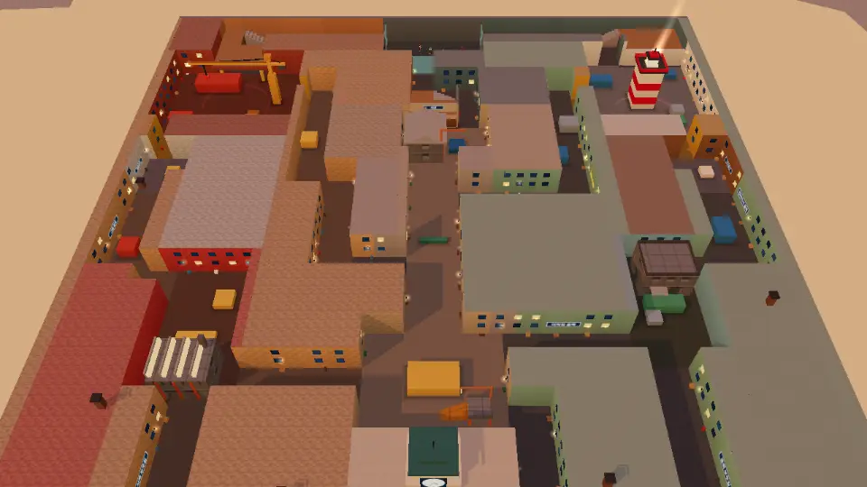
포구
5대5148×160m사이트 A · B저녁빛 항구 마을
붉은 벽돌 창고와 크레인이 있는 A 쪽, 함석 창고와 줄무늬 등대가 있는 B 쪽, 그 사이를 잇는 돌과 콘크리트의 중앙으로 나뉜 맵입니다. 세 갈래 길이 사이트 두 곳으로 이어지고, 각 사이트에는 입구가 둘씩 있습니다. 일부 건물에는 진짜 2층이 있어서 그 아래를 지나다니는 사람과 위에서 내려다보는 사람이 서로 보고 쏠 수 있습니다. 구매 시간에는 양쪽 출발 지점이 방벽으로 닫히고, B 쪽 통로의 셔터는 F로 열고 닫을 수 있습니다.
팁 좁은 길목이 많아 연막과 벽 같은 시야 차단 능력이 잘 먹힙니다. 2층 위치를 먼저 확인하세요.
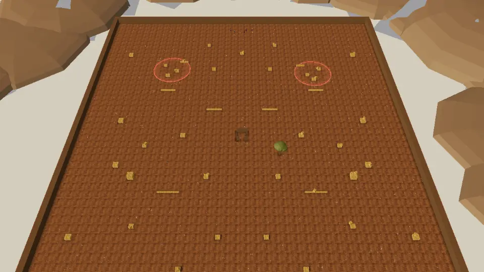
마른 들판
5대5200×240m사이트 A · B탁 트인 마른 들판
나무 한 그루와 허물어진 오두막, 건초 더미와 낮은 돌담 말고는 거의 아무것도 없는 평평한 맵입니다. 시야를 막는 벽이 없어서 사거리가 긴 총과 침착함이 중요합니다. 사이트 두 곳에도 가릴 것이 몇 개 없습니다.
팁 낮은 돌담은 앉아서 숨는 곳입니다. 연막 없이 가로지르면 맞는다는 것을 기억하세요.
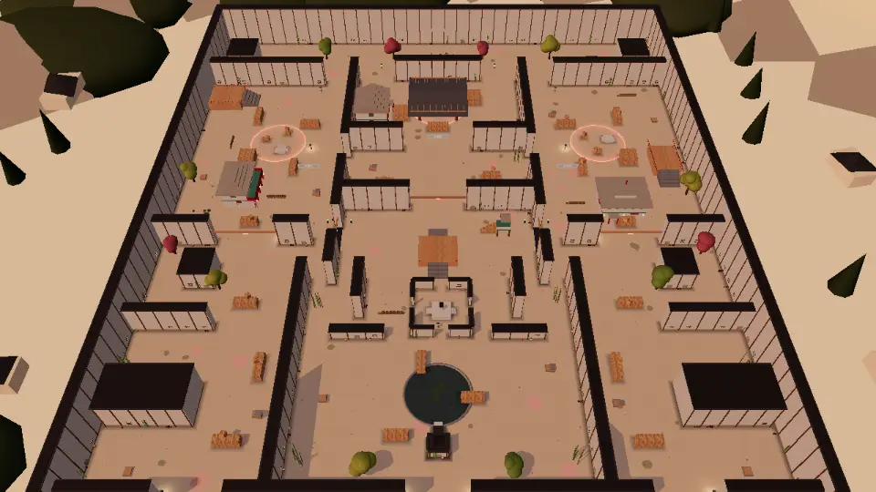
연화원
5대5174×222m사이트 A · B · C돌담이 이어진 전통 정원
연못과 정자, 정원수 사이로 낮은 돌담이 이어진 넓은 정원입니다. 사이트가 A, B, C 세 곳이어서 수비 팀은 인원을 나눠야 합니다. 양옆에는 스위치로 여닫는 문이 있고, 스위치를 눌러 문을 열면 측면으로 돌아 들어갈 수 있습니다.
팁 세 사이트 가운데 어디가 약한지 초반 정보로 파악하세요. 스위치로 여는 문은 측면 돌파의 열쇠입니다.
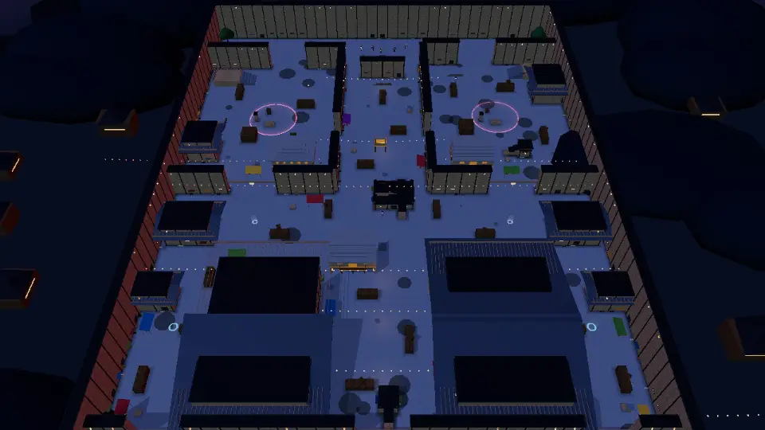
한옥 시장
5대5144×207m사이트 A · B밤의 한옥 시장
불빛이 켜진 한옥 시장 골목입니다. 좁은 골목과 점포, 기와지붕 건물이 가득합니다. 양쪽 가장자리에는 한 방향으로만 통하는 순간이동 장치 한 쌍이 있어서, 반대편 깊숙한 곳으로 뜻밖에 나타날 수 있습니다.
팁 순간이동으로 나온 곳은 상대가 가장 덜 예상하는 자리입니다. 반대로 내 뒤가 비었는지도 늘 확인하세요.
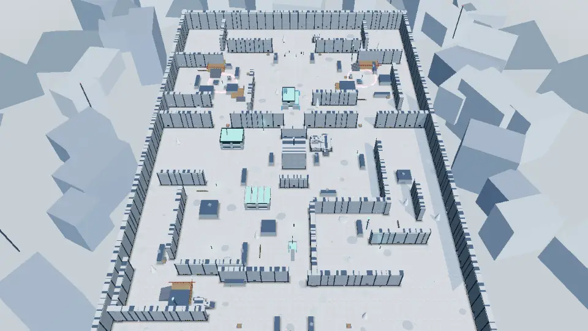
빙하 관측소
5대5288×171m사이트 A · B눈 덮인 빙하 관측소
눈 덮인 평원에 관측소 건물과 낮은 벽이 흩어져 있는 가로로 긴 맵입니다. 유리벽의 청록색 관측 시설이 곳곳에 있고, 길이 넓어서 사거리가 긴 교전이 많이 일어납니다.
팁 하얀 배경에서는 멀리 있는 적이 눈에 띄지 않습니다. 소리와 정찰 능력을 함께 쓰세요.
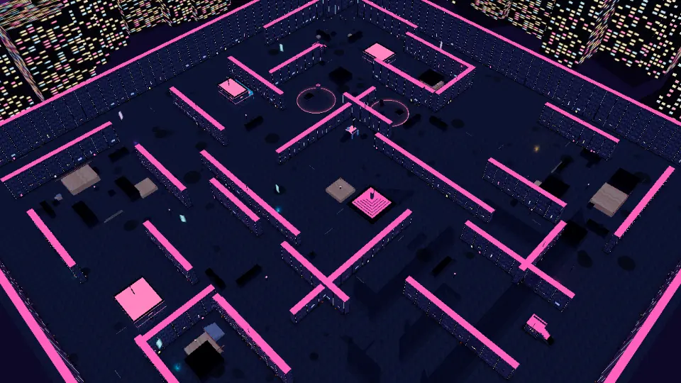
네온 정점
5대5239×239m사이트 A · B네온이 켜진 밤의 도시
분홍빛 네온 테두리가 둘린 벽이 미로처럼 이어진 정사각형 맵입니다. 가운데에는 층이 진 발광 단상이 솟아 있고, 멀리 도시의 불빛이 둘러서 있습니다. 벽이 길게 늘어서 있어 막다른 길과 우회로를 외워 두면 크게 이득입니다.
팁 네온 빛이 눈에 띄는 대신 어두운 구석이 많습니다. 소리로 위치를 읽으세요.
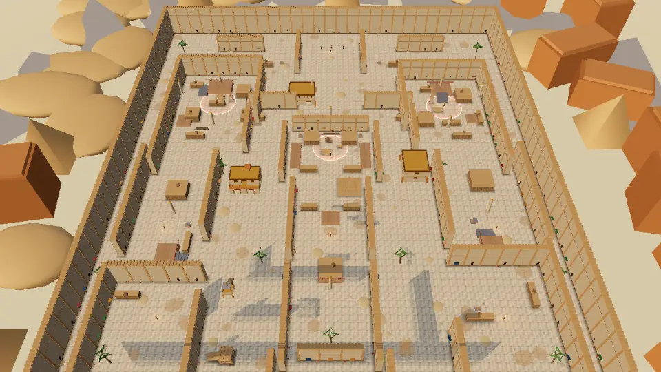
모래무덤
5대5203×258m사이트 A · B · C모래빛 사막 요새
사암 벽으로 둘러싸인 요새 안에 긴 복도와 작은 나무 오두막, 야자나무가 놓인 큰 맵입니다. 사이트가 세 곳이며 복도가 길어 한 번 자리를 잡으면 오래 버틸 수 있습니다.
팁 복도 끝에서 마주치면 사거리가 갈립니다. 중거리 총으로 싸우기 좋은 거리를 고르세요.
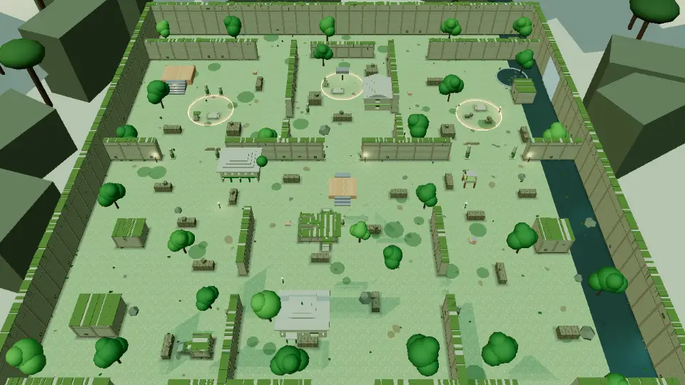
밀림 유적
5대5186×210m사이트 A · B · C이끼 낀 밀림 유적
나무가 빽빽한 밀림 속에 이끼 낀 석조 유적이 서 있는 맵입니다. 사이트가 세 곳이고, 한쪽 가장자리에는 강이 흐르고, 가운데에는 계단이 있는 유적 단상이 있습니다. 나무와 덤불이 시야를 부분적으로 가려 줍니다.
팁 나무 뒤에 숨은 적은 소리로 찾아야 합니다. 발소리 음량을 높여 두세요.
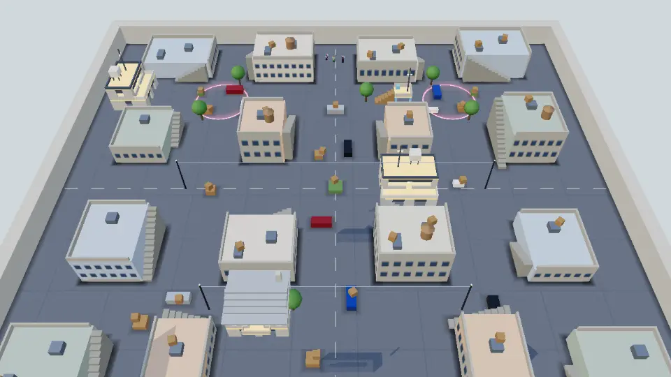
옥상 도시
5대5124×112m사이트 A · B옥상이 이어진 도시
오후의 도시 블록입니다. 4.5m에서 9m까지 높이가 다른 열여섯 개 건물이 있고, 건물 옆면의 계단으로 옥상에 오를 수 있습니다. 옥상에는 난간과 환풍구가 있어 엄폐가 됩니다. 스파이크 사이트는 두 광장이고, 교차로 위로 집라인 두 줄(F)이 걸려 있습니다. 봇은 거리로만 다니고 옥상은 사람의 자리입니다.
팁 옥상을 먼저 차지한 쪽이 거리를 내려다봅니다. 집라인은 빠르지만 타는 동안 무방비입니다.
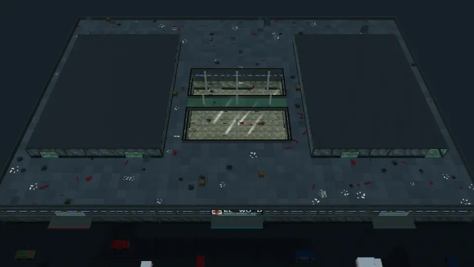
폐병원
5대5120×100m사이트 A · B3층짜리 폐병원 미로
건물 전체가 미로인 폐병원입니다. 1층은 응급실, 중앙 로비, 하역장의 입구 셋과 5m 크기의 방들로 이어진 병동 둘, 30m 크기의 중앙 아트리움이 있고, 뒤쪽에 수술실(A)과 약품 창고(B), 그 사이에 수비 팀의 중환자실이 있습니다. 2층에는 아트리움을 둘러싼 발코니에서 아래로 쏠 수 있고, 3층에는 지붕 아래 두 날개 미로와 옥상 데크, 아트리움을 가로지르는 다리가 있습니다. 바닥은 진짜 층이라 그 아래와 위를 따로 걸을 수 있습니다.
팁 층이 여러 개라서 머리 위와 발밑도 확인해야 합니다. 봇은 1층에서만 움직입니다.
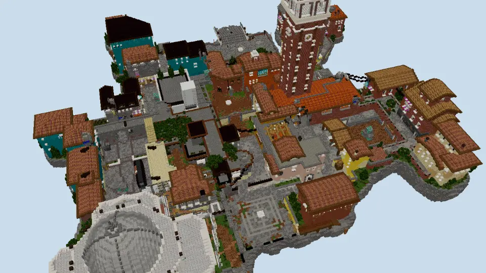
마크X발로
5대5288×171m사이트 A · B블록으로 쌓은 섬 마을
블록으로 쌓은 지형 위에 만든 큰 5대5 맵입니다. 하늘에 떠 있는 섬 위로 시계탑과 돔 지붕 유적, 붉은 기와지붕 건물이 이어지고, 좁은 골목과 광장, 옥상이 엮여 있습니다. 지형 파일이 크기 때문에 이 맵을 처음 고르면 불러오는 시간이 조금 걸립니다.
팁 지형이 불규칙해서 높낮이를 이용한 자리가 많습니다. 처음에는 혼자 하기로 길을 익히세요.
소규모 3대3 맵 8곳
한 팀 세 명이 하기 좋은 작은 맵입니다. 길이 짧아 교전이 빨리 시작됩니다. 장벽이 움직이는 시프트 아레나와 달리는 열차 같은 변칙 맵도 여기 있습니다.
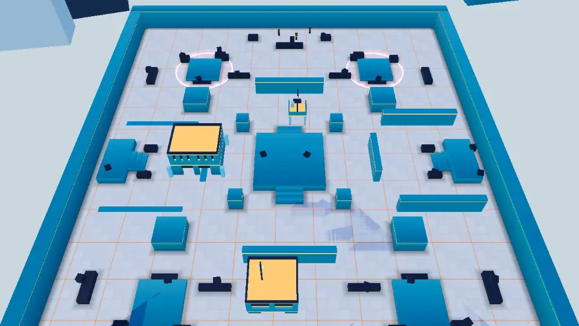
시프트 아레나
소규모 3대390×110m사이트 A · B벽이 오르내리는 아레나
파랑과 하양의 작은 경기장입니다. 가운데에 계단이 있는 높은 단상이 있고, 둘레에 블록과 낮은 엄폐물, 탑 두 개, 사이트용 단 두 개가 있습니다. 높은 장벽 세 묶음이 22초마다 한 묶음씩 내려앉고 나머지는 서 있어서, 안전한 자리와 건너는 길이 계속 바뀝니다. 바뀌기 3초 전에 곧 움직일 장벽이 주황색으로 빛나며 카운트가 표시됩니다.
팁 장벽이 바뀌는 순간 시야가 새로 열립니다. 카운트를 보며 미리 자리를 잡으세요.
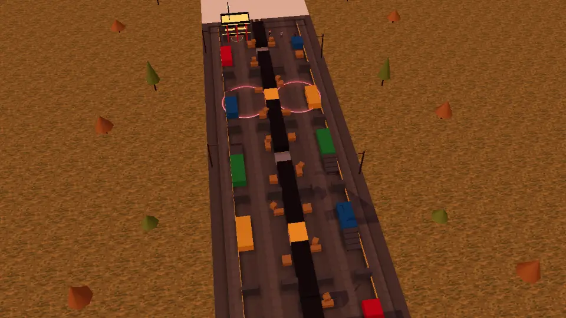
달리는 열차
소규모 3대328×124m사이트 A · B달리는 화물열차 위
해 질 무렵 나란히 달리는 화물열차 두 대 위에서 싸우는 폭이 좁은 맵입니다. 각 열차는 다섯 칸의 평판 화차가 이어져 있고 컨테이너와 상자가 엄폐물입니다. 열차 사이 4m의 틈에는 다리 다섯 개가 세 묶음으로 놓여 있으며, 20초마다 한 묶음이 접혀 올라가 건너는 길이 바뀝니다. 열차는 제자리에 있고 땅과 전신주가 지나갑니다.
팁 다리가 접히기 3초 전에 경고가 켜집니다. 다리 위에서 기다리는 것은 위험합니다.
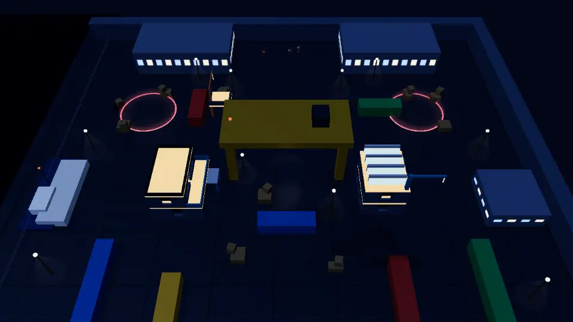
야간 항구
소규모 3대392×80m사이트 A · B달빛 아래 야간 항구
서쪽에 바다가 펼쳐진 밤의 항구입니다. 정박한 배, 불 켜진 창고, 컨테이너 줄이 있고, 높은 크레인의 탐조등이 부두를 훑으며 지나갑니다. 가로등 아래는 따뜻하게 밝고 나머지는 달빛의 푸른색입니다. A 사이트 옆 가로등은 깜박입니다.
팁 탐조등이 지나갈 때 그 빛 안에 서 있으면 멀리서도 보입니다.
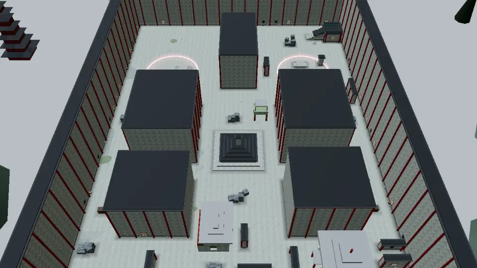
산사 뜰
소규모 3대3120×84m사이트 A · B산사의 돌마당
붉은 선이 두른 어두운 벽 안에 연한 돌마당이 있고, 지붕이 어두운 큰 전각 네 채가 대칭으로 놓인 소규모 맵입니다. 가운데에는 층이 진 석단이 있습니다. 전각 사이사이 좁은 길이 교전 지점입니다.
팁 전각 사이 통로는 좁습니다. 연막 하나로 길 하나를 완전히 닫을 수 있습니다.
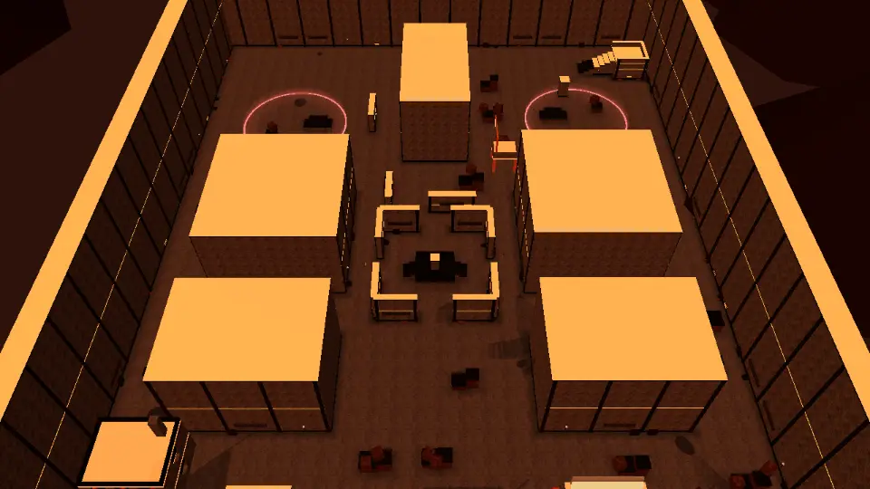
제련 공방
소규모 3대388×112m사이트 A · B붉게 달아오른 제련 공방
주황빛 불빛 아래 큰 공방 건물 네 채가 놓인 소규모 맵입니다. 가운데에는 낮은 벽에 둘러싸인 작업장이 있고, 한쪽 구석의 작은 발판으로 올라갈 수 있습니다. 어둡고 따뜻한 색이라 먼 거리의 모양이 흐려 보입니다.
팁 건물 사이로 대각선 시야가 길게 열립니다. 중앙 작업장은 좋은 거점이 됩니다.
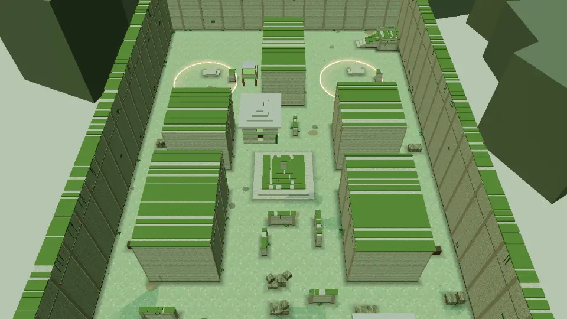
밀림 사당
소규모 3대378×118m사이트 A · B이끼 낀 밀림 사당
이끼 낀 초록 벽 안에 큰 전각 네 채와 사당 단상이 있는 소규모 맵입니다. 가운데의 계단식 단상이 눈에 띄고 건물 사이 길이 좁고 짧아서 교전이 가깝게 벌어집니다.
팁 근거리 교전이 많으니 산탄총과 기관단총이 유리합니다.
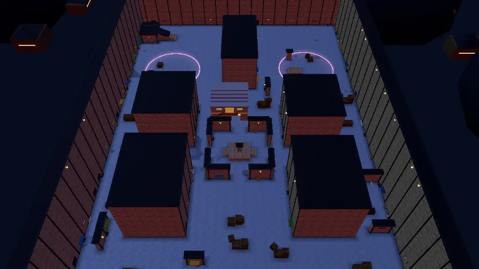
골목 장터
소규모 3대3116×78m사이트 A · B벽돌 골목의 밤 장터
푸른 밤빛 아래 붉은 벽돌 건물 네 채가 늘어선 골목형 소규모 맵입니다. 가운데에 나무 무대와 작은 가판대가 있고 가판대 둘레의 낮은 벽이 엄폐물입니다.
팁 가운데 무대를 지나는 길이 가장 많이 쓰입니다. 무대 쪽을 한 사람이 감시하세요.
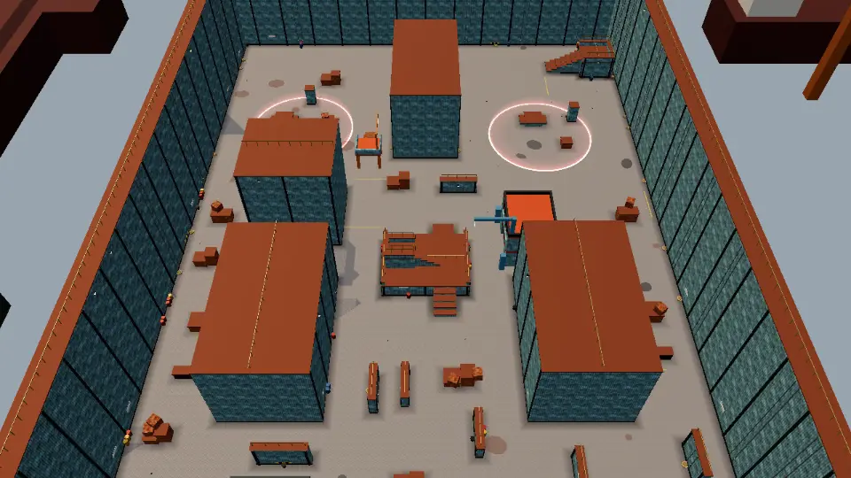
화물칸
소규모 3대3112×80m사이트 A · B컨테이너 화물 야적장
청록색 컨테이너 건물과 주황빛 녹슨 지붕이 놓인 화물 야적장입니다. 가운데에는 계단이 있는 상자 더미 발판이 있고, 한쪽에는 푸른 크레인 팔이 걸려 있습니다. 건물 사이사이 낮은 컨테이너가 엄폐물입니다.
팁 가운데 발판은 올라서면 사방이 보이지만 올라간 사람도 모두에게 보입니다.
1대1 맵 3곳
일대일 결투용 맵입니다. 데스매치나 칼 대난투를 둘이서 할 때도 잘 어울립니다.
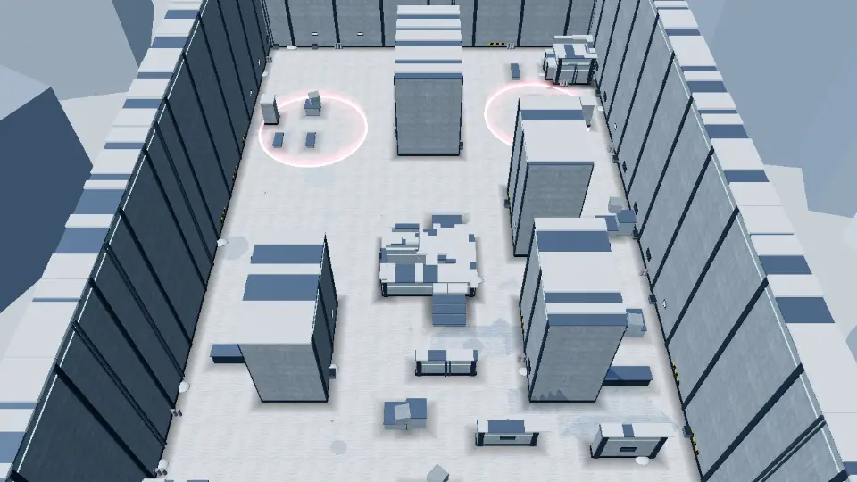
서리 결투장
1대150×78m사이트 A · B서리 낀 결투장
서리가 낀 하얀 푸른 줄무늬 벽의 1대1 결투장입니다. 가운데에 구조물이 하나 있고 양옆에 큰 블록이 있어서 돌아가는 길이 두 갈래입니다.
팁 1대1에서는 발소리가 가장 큰 정보입니다. 방향이 들리니 귀를 열어 두세요.
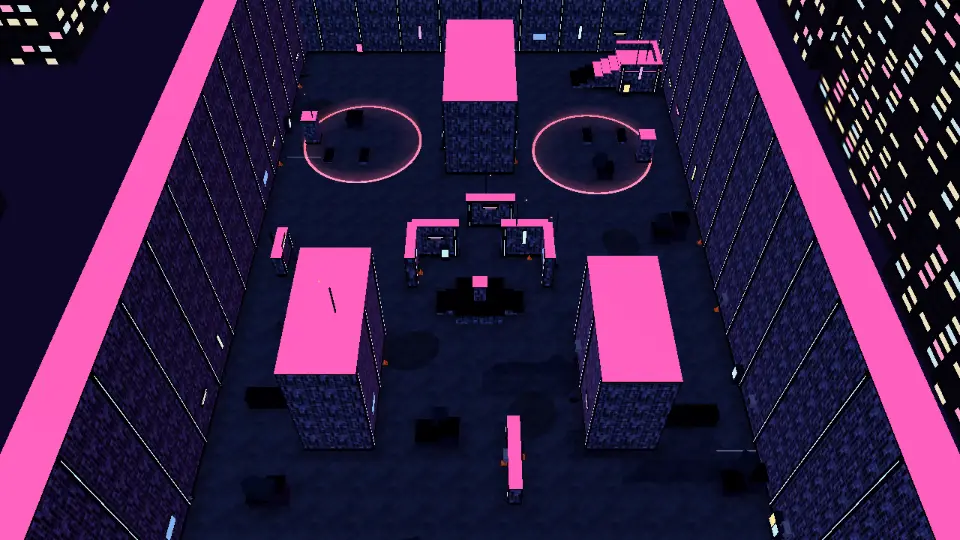
네온 링
1대150×80m사이트 A · B분홍 네온의 링
분홍빛 네온 벽으로 둘러싸인 1대1 결투장입니다. 가운데에 아치형 엄폐물이 세 개 있고 양옆에 큰 블록이 있습니다. 멀리 도시의 불빛이 비칩니다.
팁 아치 사이로 시야가 겹칩니다. 한 곳에서 쏘고 바로 자리를 옮기세요.
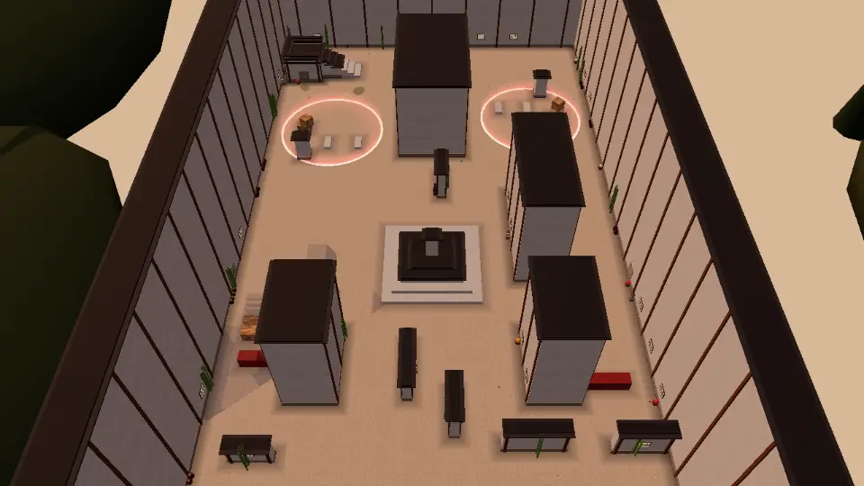
달빛 마당
1대184×48m사이트 A · B달빛 마당
모래색 바닥에 가로로 넓은 1대1 마당입니다. 가운데에 돌 단상이 있고 지붕이 어두운 전각 네 채가 대각선으로 놓여 있습니다.
팁 가로로 넓어 측면에서 돌아 들어가기 쉽습니다. 단상을 차지하면 양쪽이 보입니다.
이번 주 맵
정규 목록 22곳 말고도, 평소에는 목록에서 빠져 있는 맵 36곳이 더 있습니다. 매주 월요일 0시(한국 시간)가 되면 그중 한 곳이 "이번 주 맵"으로 일주일 동안 맵 목록 맨 앞에 올라옵니다. 모든 이용자에게 같은 맵이 보이고, 한 바퀴를 다 돌기 전에는 같은 맵이 다시 나오지 않습니다. 이번 주 맵은 첫 화면의 게임 설명 줄에도 표시됩니다. 운영자가 이 기능을 끌 수도 있습니다.